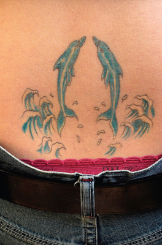

← Back to index
Poached Salmon with Dill BBQ Sauce

Servings: 4
Ingredients
- The Fish:
- 2 boneless salmon fillets (8 to 10 ounces each)
- Kosher salt and black pepper
- 2 tablespoons butter
- 3 large cloves garlic, minced
- 1 tablespoon minced fresh ginger
- 1 ½ cups dry white wine
- 1 cup water
- ½ cup Mutha Sauce
- 6 sprigs dill
- 6 fresh sage leaves
- 1 tablespoon black peppercorns
- ½ tablespoon mustard seeds
- The Sauce:
- 1 tablespoon Dijon mustard
- ½ cup Mutha Sauce
- 1 tablespoon chopped fresh dill
- Black pepper
- The Garnish:
- Fresh dill sprigs
Instructions
- Season both sides of the salmon fillets with salt and pepper. Pick out a pan large enough to hold the salmon nice and tight in one layer. Toss the butter into the pan and melt it over medium heat. Add the garlic and ginger and let them sweat out their flavors for 2 minutes, being careful not to let them brown.
- Pour in the wine, water, and the Mutha Sauce. Then toss in the dill, sage, peppercorns, and mustard seeds. Bring the mixture to a gentle boil. Immerse the salmon, skin side down. Bring the liquid back up to a bubbly boil for 30 seconds. Cover the pan loosely with a lid and turn the heat way down low. Simmer for 10 to 15 minutes, til the fish begins to lightly flake. Gently lift the salmon out onto a plate, and keep it warm in a 140° oven.
- Strain out the dill, sage, peppercorns, and mustard seeds, leaving just the poaching liquid in the pan. Turn the heat up to high and bring to a rapid boil. Reduce the liquid for 2 minutes. Make the sauce by whisking the mustard and Mutha Sauce into the poaching liquid. Add the dill and the pepper. Divide the salmon into 4 portions, placing each on a soup plate. Ladle the brothy sauce over each portion and garnish with a sprig of dill. Now enjoy the dancin’ flavors of this simple dish.